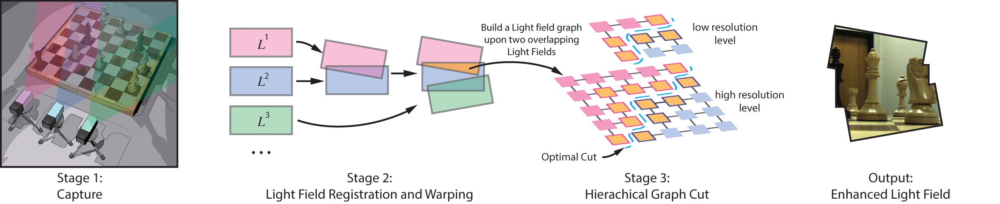
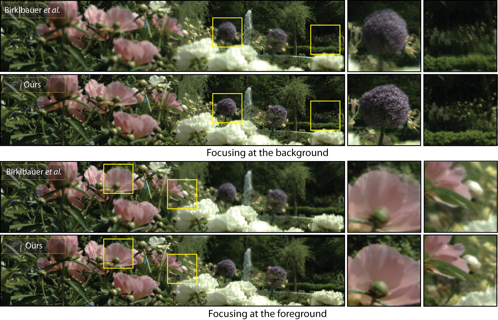

Light fields (LFs) have been shown to enable photorealistic visualization of complex scenes. In practice, however, an LF tends to have a relatively small angular range or spatial resolution, which limits the scope of virtual navigation. In this paper, we show how seamless virtual navigation can be enhanced by stitching multiple LFs. Our technique consists of two key components: LF registration and LF stitching. To register LFs, we use what we call the ray-space motion matrix (RSMM) to establish pairwise ray-ray correspondences. Using Plücker coordinates, we show that the RSMM is a 5 × 6 matrix, which reduces to a 5 × 5 matrix under pure translation and/or in-plane rotation. The final LF stitching is done using multi-resolution, high-dimensional graph-cut in order to account for possible scene motion, imperfect RSMM estimation, and/or undersampling. We show how our technique allows us to create LFs with various enhanced features: extended horizontal and/or vertical field-of-view, larger synthetic aperture and defocus blur, and larger parallax.



[1D Panorama] [2D Panorama] [Enhanced Aperture] [Enhanced Translational Parallax] [Enhanced Rotational Parallax]
[PDF (High Res)] [PDF (Low Res)] [bibtex]